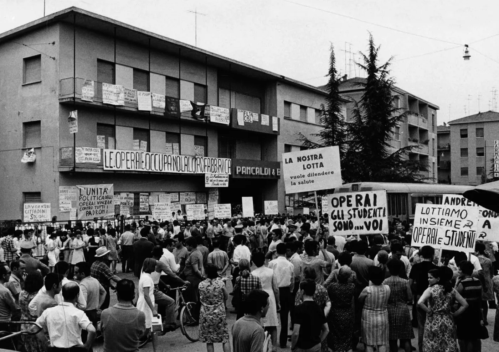
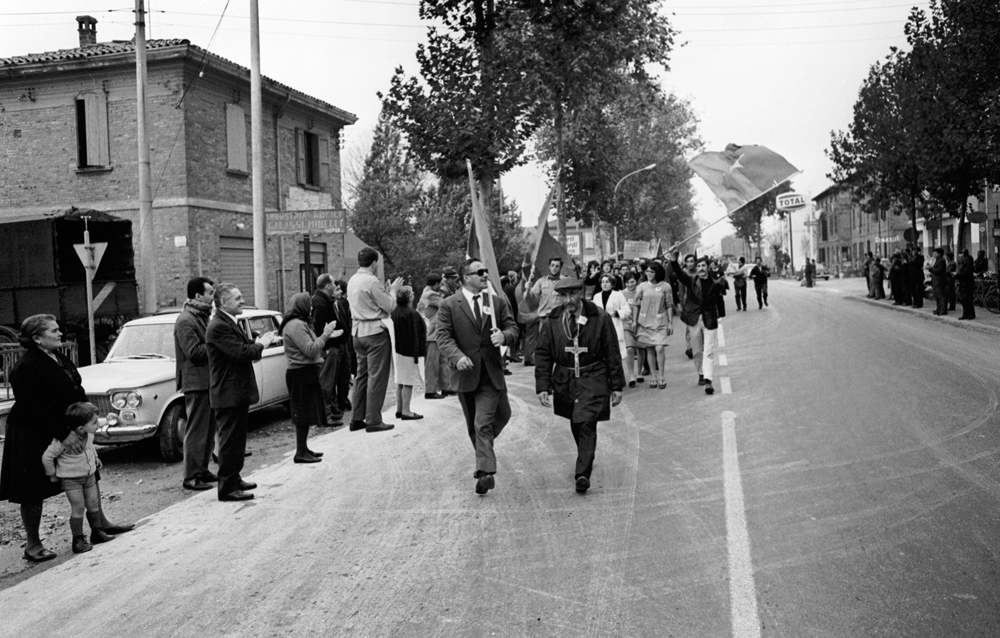
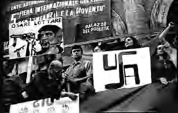
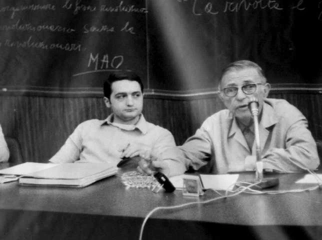
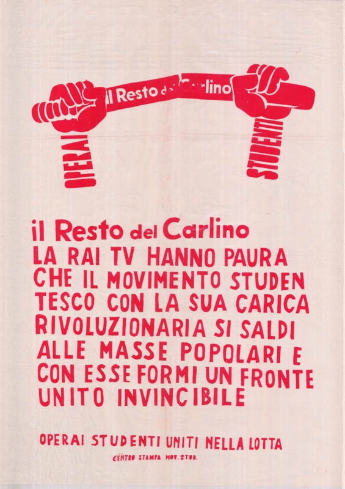
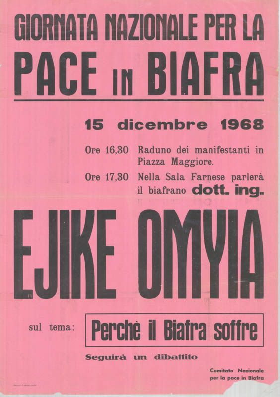
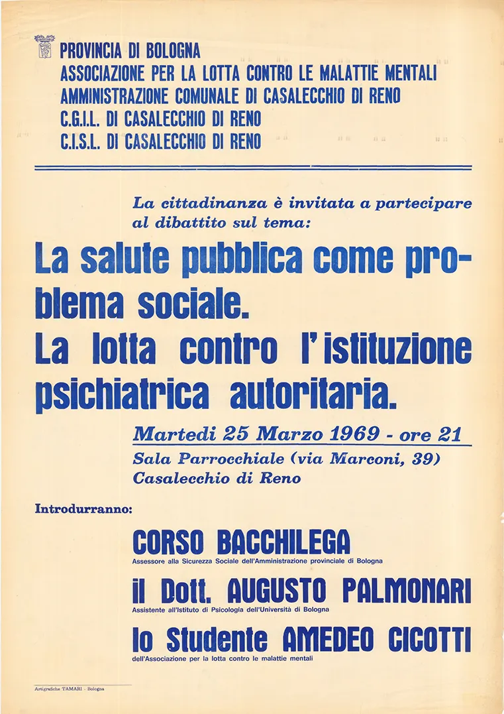
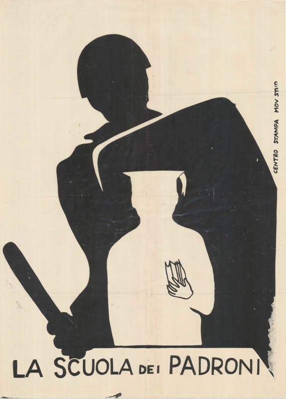
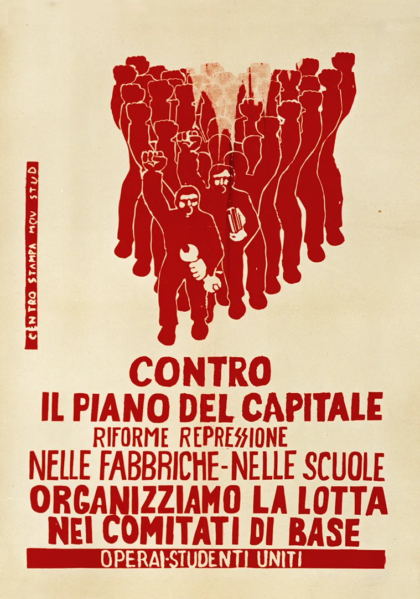
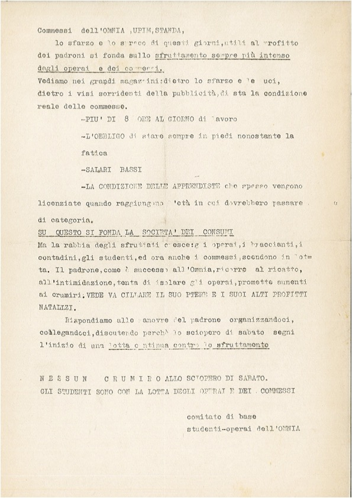

Esplora e filtra la collezione di fotografie, volantini e manifesti d'archivio.










Nessun documento corrisponde ai filtri selezionati.
L'intero archivio è disponibile in formati aperti per il riuso e la ricerca.
Scarica file XML/DC